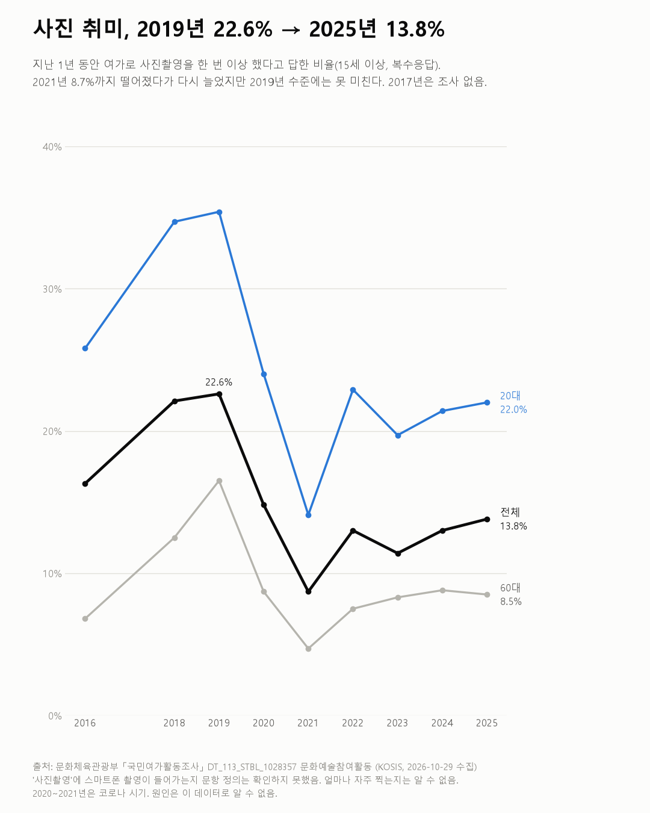
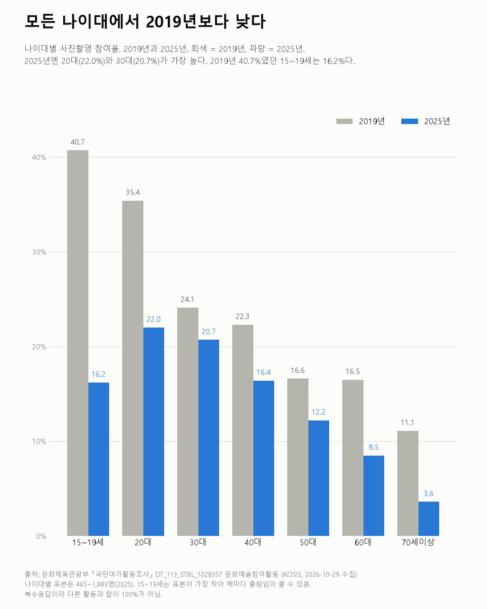

사진 취미, 2019년 22.6% → 2025년 13.8%
국민여가활동조사 2016~2025

질문
사진 촬영을 여가로 즐기는 사람은 2016년부터 2025년까지 늘었나 줄었나? 나이대별로 다른가? (앞선 글에서 가구의 디지털카메라 보유는 줄었다. 그렇다면 사진을 취미로 찍는 사람도 줄었나?)
사용 데이터와 출처
| 데이터 | 출처 | 쓰임 |
|---|---|---|
| 지난 1년 동안 한번이상 참여한 여가활동 유형(복수응답)-문화예술참여활동 (KOSIS DT_113_STBL_1028357) | 문화체육관광부 「국민여가활동조사」 | 사진촬영 참여율, 전체·성별·나이대별 |
| 같은 문항-취미오락활동 (KOSIS DT_113_STBL_1028364) | 같은 조사 | 홈페이지/블로그관리 참여율(참고), 표본수 확인 |
- 값은 15세 이상 중 "지난 1년 동안 여가로 한 번 이상 했다"고 답한 비율이다. 여러 활동을 고를 수 있다.
- 매년 약 1만 명을 조사한다. 2017년은 값이 없다.
- 검증: 두 표의 연도·집단별 표본수가 같은지 확인했다(2016년은 문화예술참여 표에 표본수가 없어 취미오락 표 값을 씀).
- 교차 확인: 보도자료에서 사진촬영 수치를 찾지 못했다. KOSIS 표 값만 근거로 썼다.
- 수집일: 2026-10-29 (KOSIS 오픈API).
인사이트
1. 사진촬영을 여가로 한 사람은 2019년 22.6%였고, 2025년 13.8%다. 2020년 14.8%, 2021년 8.7%로 떨어졌다가 다시 늘고 있지만 2019년 수준에는 못 미친다.
2. 2025년에는 20대(22.0%)와 30대(20.7%)가 가장 많이 찍는다. 40대 16.4%, 50대 12.2%, 60대 8.5%, 70세 이상 3.6%로 나이가 많을수록 낮다.
3. 모든 나이대가 2019년보다 낮다. 차이가 가장 큰 곳은 15~19세(40.7% → 16.2%)와 20대(35.4% → 22.0%)다. 30대는 24.1%에서 20.7%로 차이가 가장 작다.
4. 같은 기간 다른 문화예술 활동도 비슷하게 줄었다. 악기연주·노래교실은 2019년 6.3%에서 2025년 4.2%로 줄었고, 미술활동은 5.3%에서 3.9%다. 참고로 홈페이지·블로그 관리는 2016년 7.1%에서 2025년 3.9%다.

한계
이 데이터로 말할 수 없는 것
- '사진촬영'의 범위를 확인하지 못했다. 스마트폰으로 찍는 것이 들어가는지 문항 정의를 찾지 못했다. 그래서 카메라 보유(앞선 글)와 바로 연결하지 않았다.
- 얼마나 자주 찍는지는 모른다. 1년에 한 번이라도 했으면 들어간다.
- 2019년이 특히 높았을 수 있다. 15~19세 값이 2018년 26.7%에서 2019년 40.7%로 크게 뛰었다가 다음 해 19.7%로 내려갔다. 15~19세는 표본이 가장 작다(2025년 465명). 2019년을 기준으로 삼으면 감소가 크게 보일 수 있어 2016년(16.3%)과 2018년(22.1%) 값도 함께 적었다.
- 2020~2021년은 코로나 시기다. 여가 전반이 줄었던 때다. 그 뒤 회복이 덜 된 이유는 이 데이터로 알 수 없다.
- 표본조사다. 나이대별 표본은 465~1,883명(2025년)이라 1~2%p 차이는 오차일 수 있다.
- 원인은 말하지 않는다.
전제 기록
데이터를 보기 전에 적어둔 것, 그리고 보고 나서 바꾼 것
- 전제 기록(premises)(데이터를 받기 전에 작성)를 따랐다. 전제 2(스마트폰 포함 여부)는 끝내 확인하지 못해 한계에 남겼다.
- 받은 뒤 바뀐 점: 2016년 문화예술참여 표에 표본수가 없어 표본수 검증은 2018년부터 했다.